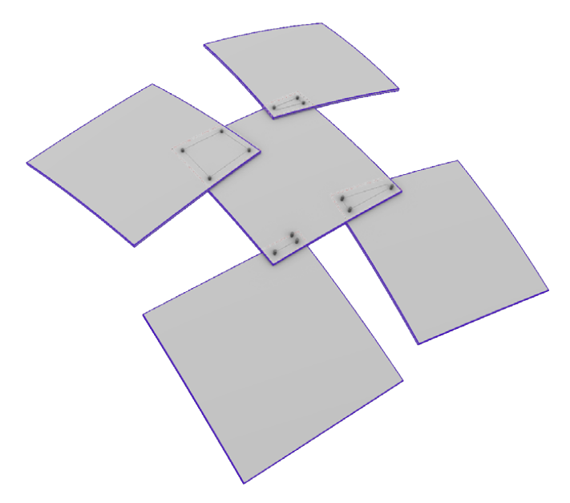
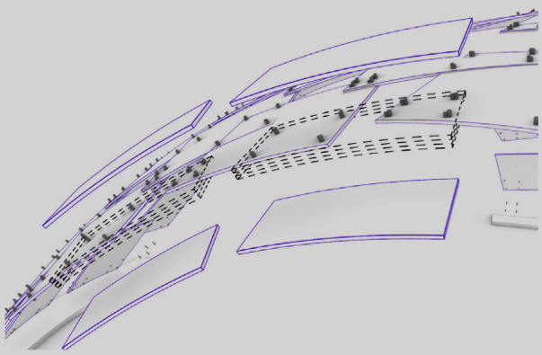
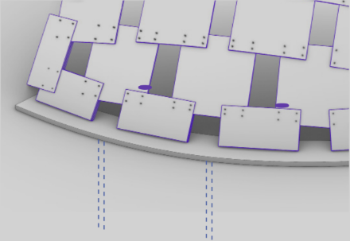

Our research focuses on the complete process of designing and constructing a full scale self-strutted shell using plywood.
This optimization was achieved through the introduction of controlled adjustments to the directional orientation of each panel, thus ensuring seamless alignment and uniformity in the overlapping regions.
These openings were then strengthened sandwiching the panels along the arches using the same 9mm rectangular panels.
Spirafix is used as the foundation and ground anchorage , which is inserted from middle of the cross beam
